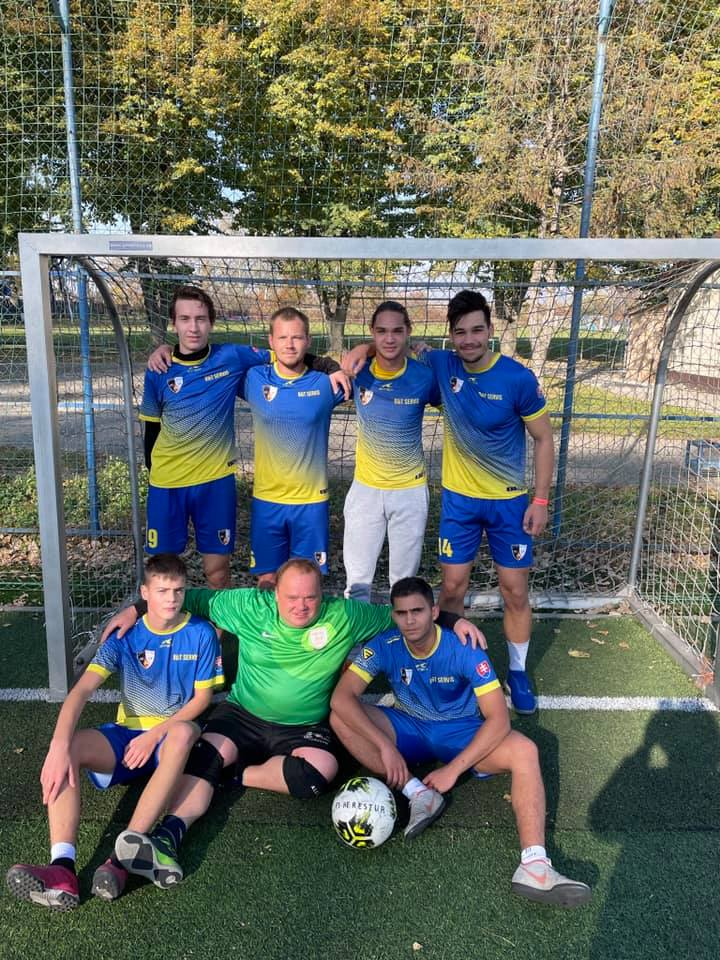

V 10. kole sme sa stretli so súperom Expotech, ktorý nám v tabuľke "dýchal" na chrbát. Od rána sme mali
upršané počasie, a tak trocha aj strach, že by hracia plocha mohla byť klzká. Našťastie sa nám pred
výkopom
počasie zlepšilo a my sme sa mohli naplno sústrediť na zápas. Hralo sa prevažne na jednej polovici, a to
súperovej. Na lopte sme boli síce dominantní no aj tak sa nám hralo ťažko. My sme behali a protihráči
využívali dlhoročné skúsenosti. Po nepremenených šanciach a pomaly stupňujúcej sa nervozite skóroval
Jakub
Čirip a strelil tak gól, ktorý bol nakoniec aj rozhodujúci. Týmto zápasom sme ukončili prvú polovicu
sezóny.
Myslím si, že môžeme byť so svojimi výkonmi spokojní, aj keď stále je, čo zlepšovať. Po 10 zápasoch máme
7
výhier, 1 remízu a 2 prehry so skóre 40:28. Nachádzame sa na 6. mieste s tým, že s 5. a 4. miestom máme
narovnako 22 bodov. Najlepší strelec nášho tímu je zatiaľ Jakub Čirip s 12 gólmi. Prvý zápas jarnej
časti
odohráme 27.3.2022. Teraz nás už čaká zaslúžený oddych a zimná príprava.,
31.10.2021 Miniliga 9.kolo
V 9. kole nás čakal súper Ochranné krídla. Po minulovíkendovej remíze sme mali v hlave len jedno, a to,
že
musíme bodovať naplno. A, čo sa nám dnes podarilo ? Nastrieľať súperovi až 9 gólov a inkasovať 2. Nie je
potrebné rozpisovať priebeh zápasu keďže sa vyvíjal celý čas v náš prospech, ako hovorí už aj samotný
výsledok. Tentokrát by som chcel pochváliť celé mužstvo, každý jeden hráč sa presadil až na nášho
brankára.
No jeho by som chcel špeciálne vyzdvihnúť keďže nás aj tento zápas podržal, ako to robí neustále a bez
neho
by sme nedosahovali tak pozitívne výsledky ako doteraz. Momentálne sa držíme v top 6 (presné umiestnenie
zistíme až zajtra) a to je viac ako dosť na následný play-off po sezóne o víťaza ligy. Ďalší víkend nás
čaká
posledný zápas zimnej časti a my sa budeme pripravovať na tu jarnú.
Góly: 2 Richard Berko, 2 Jakub Čirip, 1 Kevin Novák, 1 Martin Šoltés, 1 Patrik Matta, 1 Richard Rigo, 1
vlastný gól

25.10.2021 Miniliga 8.kolo
V ďalšom kole miniligy sme sa stretli so súperom Stanica Košice, na ktorého sme pred týmto zápasom
strácali
3 body. V dobrej zostave sme si verili, že to bude víťazný zápas. Úvod zápasu začal aktívnou hrou a hneď
sa
nám podarilo skórovať. Po tomto góle sa nám však prestalo dariť v zakončení a množstvo šancí sme
nevedeli
využiť. Naopak sa z ojedinelých šancí presadil súper a polčas tak skončil 1:1. Druhý polčas mal podobný
priebeh, opäť sme sa trápili vo finálnom zakončení, súper sa snažil presadiť z protiútokov a jeden z
nich mu
aj vyšiel. Následne sa nám podarilo vyrovnať šťastným gólom, kedy prihrávka skončila až v bráne. Ku
koncu
zápasu vystupňoval náš tlak a súpera sme viac krát pritlačili v obrane. K dispozícii sme mali aj penaltu
no
ani z toho sa nám už nepodarilo skórovať a tak zápas pre nás skončil nepriaznivou remízou 2:2.
V zápase sme ukázali aktívnu hru a veľkú snahu, no musíme sa zlepšiť v zakončení.
Góly: 1 Matej Drobňák, 1 Jakub Čirip
18.10.2021 Miniliga 7.kolo
V oklieštenej zostave 5 hráčov sme nastúpili do siedmeho kola proti tímu Luník IX.
Zápas sme začali rozvážnou hrou, keďže sme vedeli, že bez striedania si budeme musieť sily rozdeliť na
celý
zápas. Snažili sme sa kombinovať v zadu a držať loptu. Už po niekoľkých minútach sa nám podarilo
presadiť a
otvoriť skóre zápasu, no o chvíľu na to sme nepozornosťou v zadu umožnili súperovi vyrovnať. To nás však
nezlomilo a na dnešného súpera sme si verili. Zvýšenou útočnou aktivitou a peknými prihrávkami sa nám
podarilo opäť skórovať a do polčasu už bol stav 4:1.
V druhom polčase na nás súper vybehol a robilo nám to problémy, súper znížil na 4:2. Následne sa šance
aj
góly striedali na obidvoch stranách a my sme sa snažili udržať si náskok. Ku koncu zápasu pridal ešte
Erik
Drobňák 2 góly čím definitívne rozhodol o našej výhre pomerom 8:4
Góly: Erik Drobňák 4, Jakub Čirip 2, Kevin Novák 1 a Matej Drobňák 1
⚽⚽⚽
11.10.2021 Miniliga 6.kolo
V šiestom kole nás čakal súper Sporting. Do zápasu sme vstupovali so vztýčenými hlavami, aby sme si
napravili chuť po minulovíkendovej prehre. Zápas sme začali vo vysokom tempe. Prvý polčas sme sa
trápili.
Vytvorili sme si veľké množstvo šancí no súperov brankár exceloval taktiež ako aj ich bránková
konštrukcia.
Streleckú smolu sa nám podarilo prerušiť v závere prvého polčasu, keď sa presadil Jakub Čirip. Druhý
polčas
sa veľmi nelíšil od prvého jediná vec, ktorá sa zmenila bol stav. Pridali sme ďalšie 4 góly a podarilo
sa
nám udržať čistý štít. Počas zápasu sme mali tak organizovanú obranu, že sa super prakticky nevedel ani
len
dostať k strele na našu bránu. Tento zápas ukázal hlavne našu vytrvalosť a tímovosť. S výsledkom 5:0 sme
veľmi spokojný a dúfame, že to pôjde takto ďalej.
Góly: 3 Jakub Čirip, 1 Patrik Matta, 1 Erik Drobňák
Vo štvrtom kole sme hrali proti nepríjemnému súperovi Smečka 22 a očakávali sme vyrovnaný a náročný
zápas.
Úvod zápasu začal našou aktívnou hrou a tvorením šancí. Po jednej z mnohých akcií sa nám podarilo
otvoriť
skóre. O niekoľko minút neskôr sa po krásnej akcii s Patrikom Mattom presadil Matej Drobňák. Dôslednou
obranou sa nám darilo nepúšťať súpera do veľkých príležitosti.
V druhom polčase sa hralo vyrovnane a šance prichádzali z oboch strán. V samom závere zápasu sme
strelili aj
tretí gól a zápas sme vyhrali 3:0⚽
Zo zápasu nás teší dobrá obrana a poctivá hra.
Góly: 2 Jakub Čirip, 1 Matej Drobňák